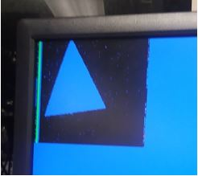
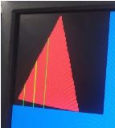
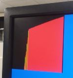
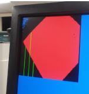

We begin by detecting whether each pixel is blue, red, or neither. If we detect that the red concentration of the pixel is around 20% more than the blue or green concentrations, we deem it a red pixel and increment the red count. If we determine that the blue concentration is greater than red and green but is also below a certain value ( so we would not detect white as blue ), the pixel is blue. We detect if the treasure is red or blue by totaling the number of red and blue pixels, and if the total number is above a threshold, then we have seen a blue or red shape.
To determine the shape, we check 3 rows of the frame: the ¼ row, ½ row, and ¾ row. In each row, we check for when we see the first red or blue pixel in that row and save its X_ADDR location in an array. However, we only do this when we see that the X_ADDR of the pixel being sent over is greater than a certain threshold to prevent from detecting false positives.
#Pseudo code
rows_r[3]
rows_b[3]
if (X_ADDR > 20)
if Y_ADDR == 1/4 row:
If pixel is red:
rows_r[0] = X_ADDR
Else if pixel is blue:
Rows_b[0] = X_ADDR
Else if Y_ADDR == 1/2 row:
If pixel is red:
rows_r[1] = X_ADDR
Else if pixel is blue:
Rows_b[1] = X_ADDR
Else if Y_ADDR == 3/4 row:
If pixel is red:
rows_r[2] = X_ADDR
Else if pixel is blue:
Rows_b[2] = X_ADDR
Else :
# don’t update anything
Else :
# do nothing
Then, once the camera sends the signal that it is the end of the frame ( vsync’s positive edge ), we check for the shape and transmit the information over. First, we check if the red and blue counts are over a certain threshold to determine the color of the treasure. Then, once we satisfy one of those conditions, we determine the shape using this criteria:
#General pseudo code
If posedge vsync :
If red > threshold:
If (rows[0] - rows[1] < 10) or (rows_r[1] - rows[0] < 10 ) :
Tell arduino its a red square
Else If ( rows[0] > rows[1] ) and ( rows[1] < rows[2] ) :
Tell arduino its a red diamond
Else if ( rows[0] > rows[1] ) and ( rows[1] > rows[2] ):
Tell arduino its a red triangle
Else :
Tell arduino we are seeing something weird
Else if blue > threshold:
# same conditions
Else :
# do nothing
As our camera was mounted on its side, you can see in the video we have some difficulty arranging the shape in the right position so that the camera sees it properly. However, you can see that after the shape is arranged properly for the camera, we get the right shape detected.
In order to determine if we were successfully assigning pixels to red, blue, or neither,
we set the monitor pixels to the colors that our FPGA “sees.” We determined that the laminated
blue shapes were difficult to detect because of the glare, so after discussing this with the instructor,
the treasures will not be laminated. Below is example of our color troubleshooting.

Next, we need to determine where the edges of our shape are.
We assigned the pixels at the x address where we first detect the side
of the shape to be green. This helped us visualize our conditional statements
for detecting shapes, particularly how to detect the square.
  
We set 3 GPIOs, ( GPIO0_29, GPIO0_30, GPIO0_31 ), to represent a 3-bit value with 29 the MSB and 31 the LSB. Based on what the 3-bit value was, we decoded it for its color and shape.
| GPIO Output | Translation |
|---|---|
| 000 | No Treasure |
| 001 | Blue Square |
| 010 | Blue Diamond |
| 011 | Blue Triangle |
| 100 | No Treasure |
| 101 | Red Square |
| 110 | Red Diamond |
| 111 | Red Triangle |